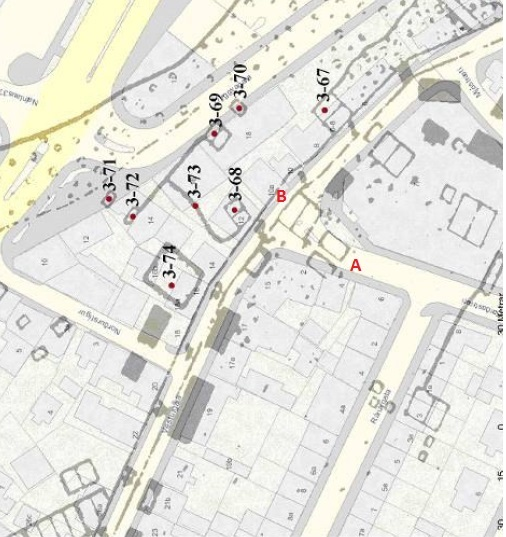
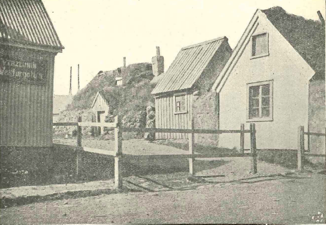

1800 – 1887
Dúkskot var byggt um 1800 í landi Hlíðarhúsa og stóð í núverandi götustæði Garðastrætis við Vesturgötu. Fyrsti ábúandinn var Jón Jónsson frá Dúki í Skagafirði og er bæjarnafnið dregið af því. Dúkskot þótti meðal betri torfbæja í Reykjavík á 19. öld.


Kort Sveins Sveinssonar; Dúkskot og Gróubær
1887